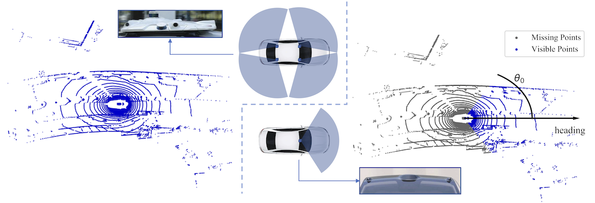
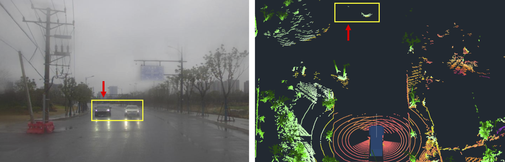
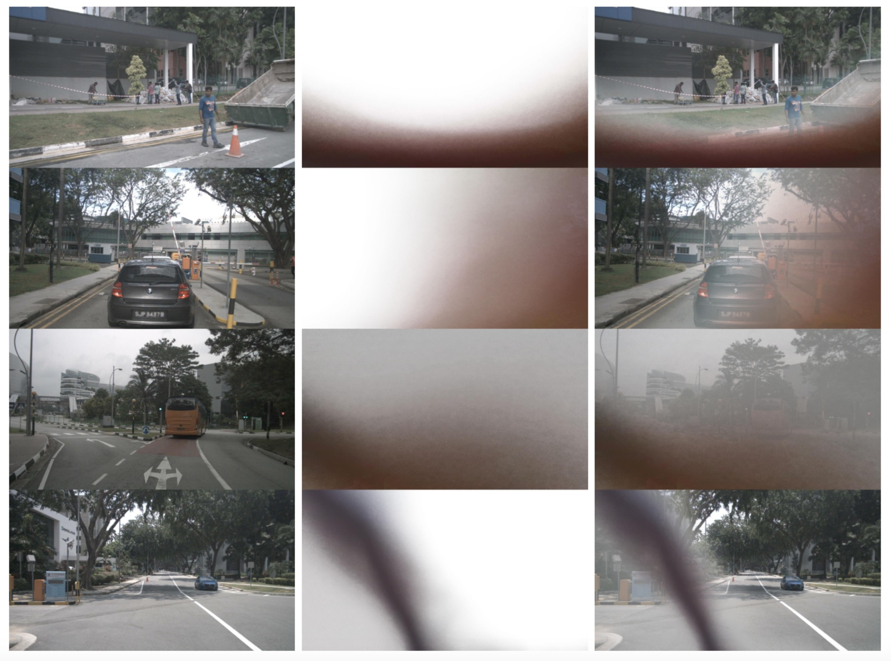
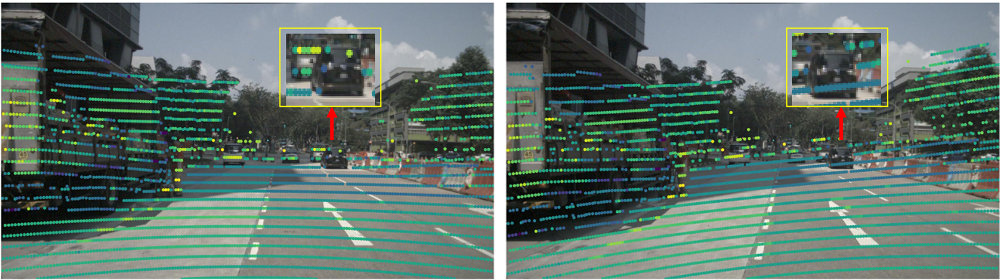
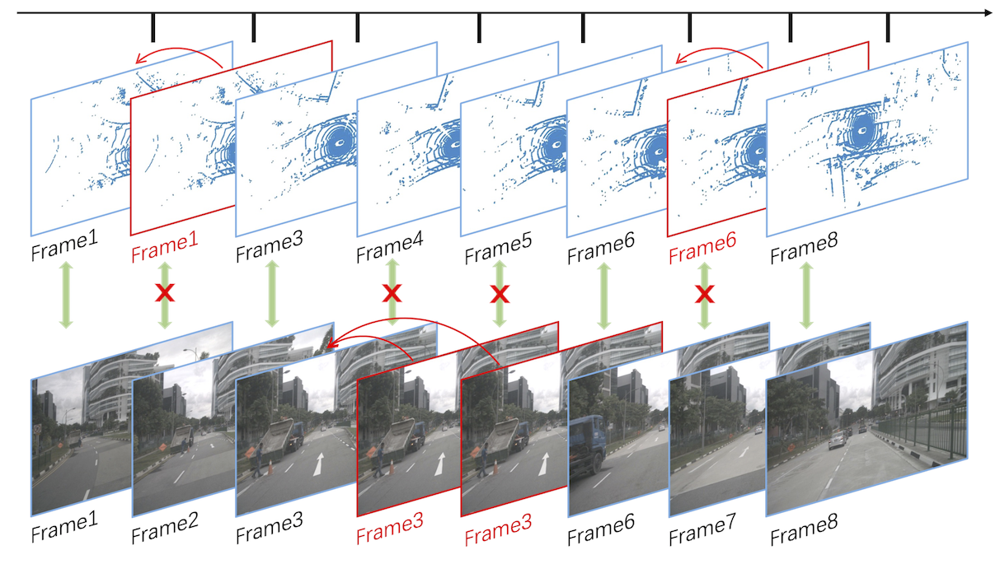

Data Toolkits
To facilitate future research, we leverage two popular large-scale autonomous driving datasets, nuScenes and Waymo, which you need to download and organize first as step 1 in Instructions. And then you can apply our toolkits in GitHub to generate noisy datasets:
nuScenes-R python tools/create_noise_data_nuscenes.py nuscenes --root-path ./data/nuscenes --out-dir ./data/nuscenes --extra-tag nuscenesnoisy pkl: dict(
'lidar': dict(...) # noisy infos of lidar
'camera': dict(...) # noisy infos of camera
)
lidar: dict(
'xxxx.bin': dict(...),
'xxxx.bin': dict(...)
)
dict(
'prev': 'xxxx.bin' or '' ,
'cam': dict('CAM_FRONT':'xxx.jpg', 'CAM_FRONT_RIGHT':'xxx.jpg', ...),
'mmdet': dict(),
'noise': dict(
'drop_frames': dict(
'10': dict('discrete': dict('stuck': True or False, 'replace': 'xxx.bin',
'consecutive': dict('stuck': True or False, 'replace': 'xxx.bin',
)
'20':
...
'90':
),
'object_failure': True/False
)
)
camera: dict(
'xxxx.jpg': dict(...),
'xxxx.jpg': dict(...)
)
dict(
'type': 'CAM_FRONT' or 'CAM_FRONT_RIGHT' or ... ,
'prev': 'xxxx.jpg' or '' ,
'lidar': dict('file_name': 'xxx.bin') ,
'noise': dict(
'drop_frames': dict(
'10': dict('discrete': dict('stuck': True or False, 'replace': 'xxx.jpg'
'consecutive': dict('stuck': True or False, 'replace': 'xxx.jpg'
)
'20':
...
'90':
)
'extrinsics_noise': dict(
'sensor2ego_translation': xxx,
'single_noise_sensor2ego_translation': xxx,
'all_noise_sensor2ego_translation': xxx,
...
),
'mask_noise': dict(
'mask_id': xxx,
)
)
)Waymo-R python tools/create_noise_data_waymo.py waymo --root-path data/waymo --out-dir data/waymo --workers 128 --extra-tag waymonoisy pkl: Similar to the nuScenes-R
Data Instructions
When you download the noisy val pkl files in Download or generate it using our toolkit above. You can evaluate your LiDAR-camera fusion methods on our benchmark as the detailed instructions in GitHub. For example, using noise of lidar object failure:LiDAR Object Failure:
class Randomdropforeground(object):
def __init__(self, noise_nuscenes_ann_file=''):
noise_data = mmcv.load(noise_nuscenes_ann_file, file_format='pkl')
self.noise_lidar_data = noise_data['lidar']
@staticmethod
def remove_points_in_boxes(points, boxes):
masks = box_np_ops.points_in_rbbox(points.coord.numpy(), boxes)
points = points[np.logical_not(masks.any(-1))]
return points
def __call__(self, input_dict):
gt_bboxes_3d = input_dict['gt_bboxes_3d']
gt_labels_3d = input_dict['gt_labels_3d']
pts_filename = input_dict['pts_filename']
noise_index = pts_filename.split('/')[-1]
points = input_dict['points']
if self.noise_lidar_data[noise_index]['noise']['object_failure']:
points = self.remove_points_in_boxes(points, gt_bboxes_3d.tensor.numpy())
input_dict['points'] = points
return input_dict
def __repr__(self):
repr_str = self.__class__.__name__
repr_str += ' fore_drop_rate={})'.format(self.drop_rate)
return repr_str
Data Examples
We show the collected real-world noisy data cases of autonomous driving as follows:Limited LiDAR field-of-view (FOV).

LiDAR object failure.

Camera lens occlusion.

Spatial misalignment.

Temporal misalignment.
